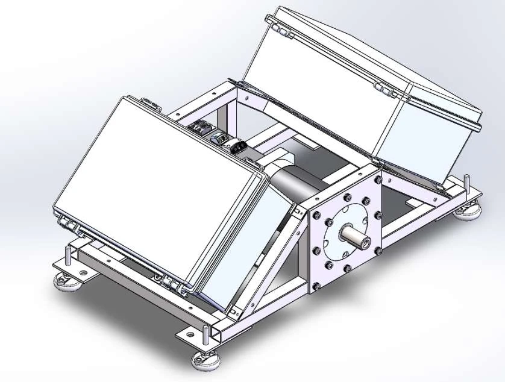
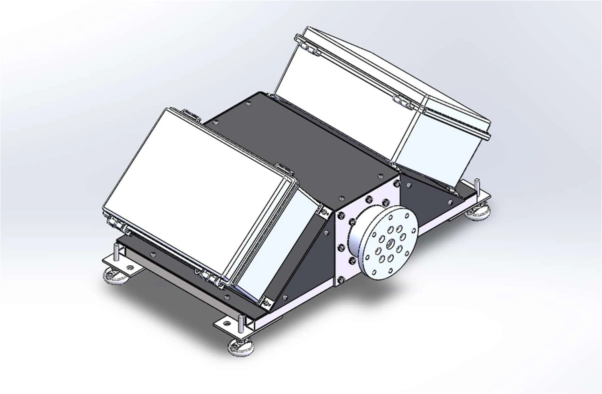
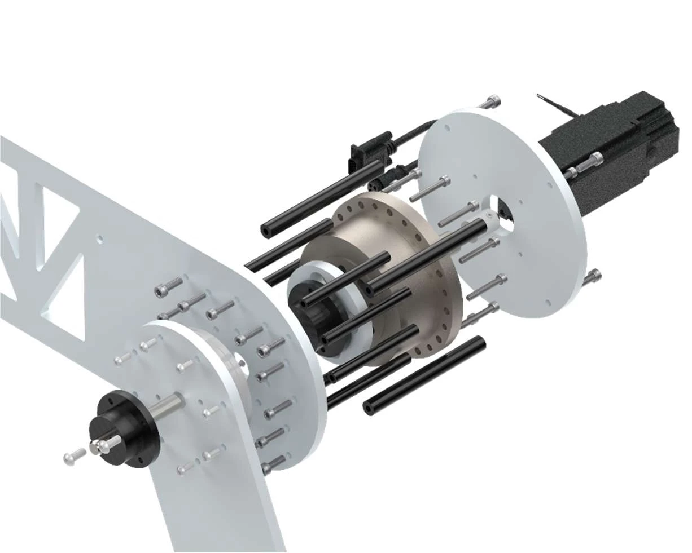
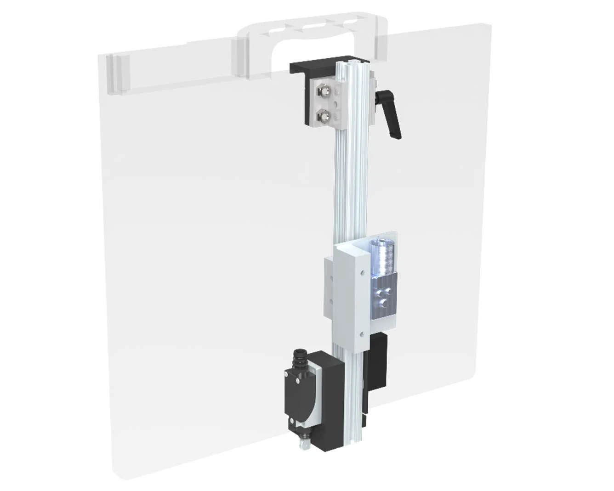
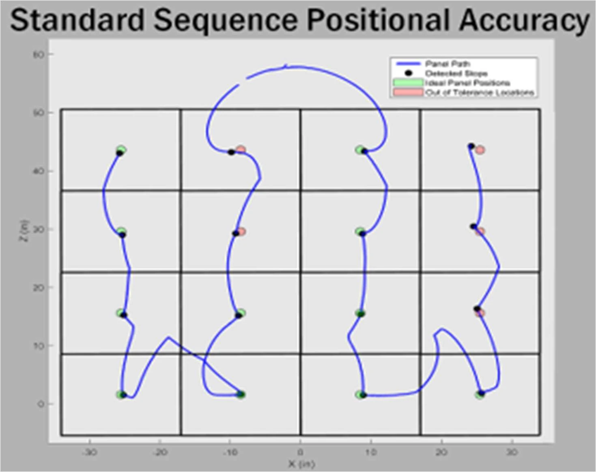

CU Boulder × Los Alamos National Laboratory · Sponsored Capstone · 2024–2025
Precise motion. Purposeful engineering.
An automated radiographic panel positioner. Built to move an X-ray panel remotely, with mechanical design, distributed controls, and electrical integration working as one.
0.081 inReported repeatability across sequence trials
9 engineersMultidisciplinary capstone team
Distinction in DesignCU Boulder Mechanical Engineering
The challenge
Move the panel. Keep the operator back.
Radiographic imaging helps bomb technicians inspect suspicious objects. Repositioning a panel manually brings the operator back toward the object. Our team developed a remotely controlled positioning system to automate that movement.
Two articulated arms cover the imaging area, while the base, panel mount, electrical system, and operator interface support deployment and scan sequences.
Electrical architecture
Different voltages. One integrated system.
The design connects an AC servo drive, a joint motor driver, microcontrollers, brakes, and sensors. Power conversion and wiring had to support their different requirements while keeping signal connections organized.

Electrical enclosures integrated into the base. Team CAD rendering, final report Figure 8.
Designed around the interfaces.
The Raspberry Pi coordinates the system. CANopen links it to the base motor drive; USB serial connects the Arduino controllers; Ethernet connects the operator interface.
The report documents an important integration lesson: routing panel limit-switch signals down to the base introduced interference. Processing those signals at the panel with an Arduino Nano provided a different communication path.
Separate power and signal cabling, common terminal blocks, and accessible connections supported assembly and troubleshooting.
Position references, homing inputs, and prototype panel tilt measurement.
Mechanical system · Team design
Built around the motion.
The shared mechanical design brings together a steel base, aluminum arms, geared joints, and a panel mount. These drawings show the physical system my electrical and controls work had to integrate with.

The base
Motor, gearbox, structural frame, and adjustable feet support the arm and house electrical hardware.

The joint
Motor and gearing drive the second arm, with custom interfaces connecting the mechanical components.

The panel mount
Supports the imaging panel and integrates the panel-side hardware.
Selected excerpts from the project repository show the connection between measurement, motion commands, and hardware. The examples below show two parts of that control chain.
Measuring panel tilt
C++ / Arduino · ADXL345 accelerometer Raw acceleration is scaled and converted into roll and pitch. This excerpt comes from the panel-leveling prototype.
// Original project excerpt: estimate panel tilt from acceleration.
adxl.readAccel(&x, &y, &z);
ax = x * 0.0039;
ay = y * 0.0039;
az = z * 0.0039;
roll = atan2(ay, az) * 57.2958;
pitch = atan2(-ax, sqrt(ay * ay + az * az)) * 57.2958;
Python / CANopen · Team control module The controller selects profile-position mode, converts the target angle into encoder counts, and sets the motion profile.
# Enable Profile Position Mode
self.node.sdo[0x6060].raw = 0x01 # 0001h for Profile Position Mode
time.sleep(0.25)
target_position = target_position_deg/360*10000*100
if not relative:
target_position = target_position + self.stepsZero #Add the zero position to the target position
self.node.sdo[0x607A].raw = target_position
self.node.sdo[0x6081].raw = velocity
self.node.sdo[0x6083].raw = acceleration
self.node.sdo[0x6084].raw = deceleration
Project source excerpts: panel tilt estimation and CANopen drive control. Active panel leveling remained a prototype feature; final field testing used gravity-based leveling.
Analysis & design decisions
Choose the hardware. Check the assumptions.
Motor selection was supported by MATLAB calculations for centers of mass, inertia, and joint torque. Comparing loads across arm configurations helped the team evaluate motor and gearbox combinations.
The electrical archive also includes calculations for panel-leveling torque, backlash, and motor conversion. These analyses document the progression from estimated loads to component choices.
Torque versus base angle from the team's analysis archive. Design-analysis output, not measured prototype torque.
Testing & iteration
The prototype taught us where to improve.
Validation included loaded motor testing, full scan sequences, VICON motion capture, and field evaluation with FBI and civilian EOD technicians.

Full-sequence positional accuracy, final report Figure 32. Some commanded scan positions fell outside the target tolerance.
Repeatability ≠ absolute accuracy.
The final testing section reports repeatability of approximately 0.081 inches across sequence trials. The ±0.125-inch absolute accuracy target was not achieved across the full scan area.
Testing traced a major error source to backlash and compliance at the base coupling. Nonlinear behavior limited the effectiveness of the software compensation.
That distinction matters: consistently returning near a location does not guarantee that the location matches the commanded coordinates.
Frequent serial position updates competed with stepper pulse generation. The report describes reducing message traffic and using a move-complete status message to improve motion behavior.
Field lesson
The leveling motor did not operate reliably in field testing, so the team used gravity-based leveling. User feedback prioritized lower weight, easier transport, and adjustable imaging angles.
Project documentation
The work behind the work.
Original team documentation provides the design context, drawings, test findings, and operating procedures behind this case study.
CU Boulder Senior Design Team 20: Daphne Felt, Benjamin Green, Mateo Medellin, Dylan Mills, Thomas Montgomery, Jakson Praeger, Kyle Varra, Luca Voeller, and Bella Wolf.
Project sponsor: Los Alamos National Laboratory. Final report dated May 9, 2025.
CAD renderings, manufacturing drawings, and validation figures are team deliverables. Original drawing title blocks retain their attribution.
The electrical image is Figure 23 in the report and is labeled Scheme12 in its title block. The original Scheme12 KiCad source is linked separately.
Performance statements use the report's detailed testing and limitations sections, which distinguish targets from achieved results.
Engineering is in the integration.
Interested in my work across hardware, sensing, and controls?